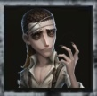
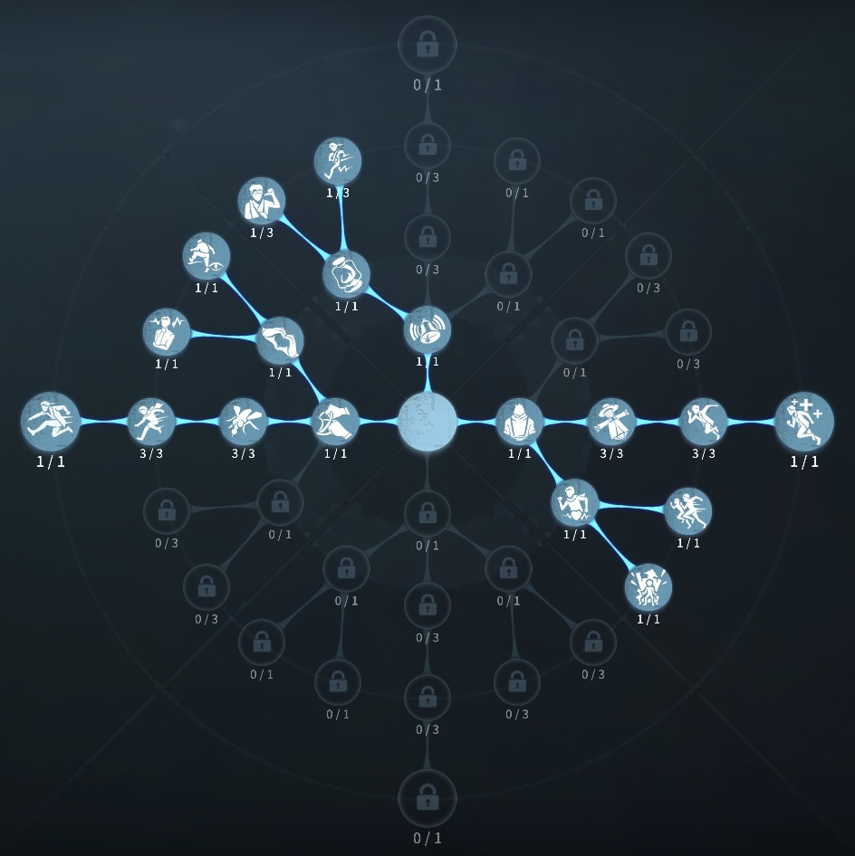
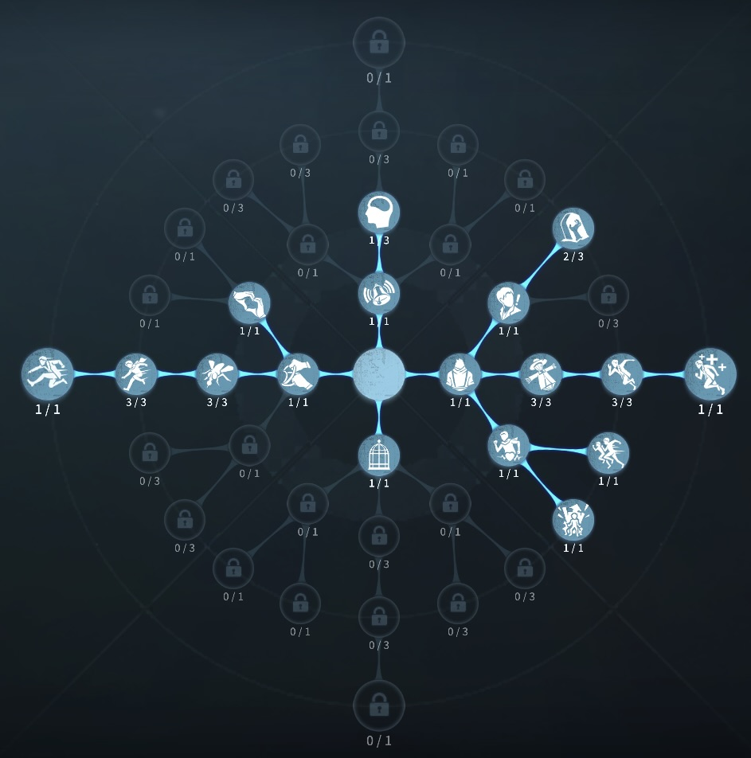

教授の評価
硬化でハンターの攻撃を無効化！
外在特質と特徴
特質1:鱗硬化
・教授は鱗を硬化させることで、1秒間通常を防ぐことができる。その間に防ぐことができなかった場合、8秒間再び硬化させることができる。ハンターの通常攻撃が硬化させた鱗にあたると4秒をかけてノックバックさせた後に行動不能状態にする。防ぐことに成功したとき次の鱗のクールタイムが65秒に、失敗したとき45秒になる。特質2:脱皮
・脱皮することで鱗を1枚その場に設置することができる。・サバイバーが鱗を拾うと鱗硬化の能力を１度だけ使うことができるようになる。鱗硬化中にハンターの通常攻撃が命中するとダメージを受けずに相手を1.43秒間ノックバックさせる。鱗を使った後120秒間は鱗を拾えない。
・ゲーム開始時にマップ内の固定の1か所に事前に鱗が生成される。
特質3:鱗の皮
・0.5ダメージ以下のダメージを1度だけ自動で無効化する。写真家の写真世界併合と破輪の突棘起爆によるダメージは防ぐことはできない。特質4:毒性限界
・脱皮してから30秒間解読速度10％低下特徴
通常攻撃を跳ね返すことができる。また、脱皮で鱗を脱ぎ捨てておくと味方がワンシールド使える。
基本的な立ち回り方
1. 追われた時
タイミングを見て鱗をつかおう！
鱗を使ってからの窓乗り越えなど安定なチェイスをするために使うのも良い！
0.5ダメージを一度許容できるので、0.5ハンターの場合、0.5ダメージ許容の窓乗り越えができる。
2. 追われない時
解読に専念する！
解読に余裕があれば、鱗を脱ぎ捨てて味方に活用してもらおう！
おすすめの内在人格
膝蓋腱反射解読型人格
この内在人格は、鵜化効果と観客効果で解読速度を高めて、癒合で治療、防衛反応でチェイスする人格

膝蓋腱反射椅子耐久型人格
この内在人格は、観客効果で解読速度を早めて、うたた寝で椅子耐久を上げる人格


みんなのコメント